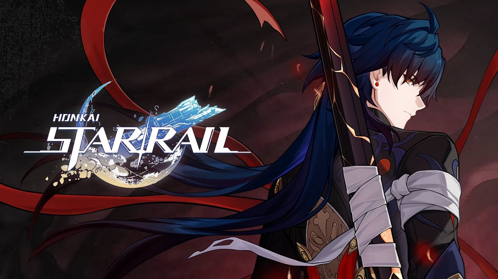

Блэйд
Ссылки на параграфы
Происхождение Блэйда
Бессмертный Охотник за Стелларонами Блэйд, в прошлом Инсин, принадлежит к маложивущим видам, он родом с неназванной планеты, которую разрушили борисинцы.
Оружейная карьера Инсина
Когда борисинцы захватили родную планету Инсина, он был ещё подростком. Мерзости превратили её в инкубатор,
где людей, как куски мяса, скармливали мехазверям. Вся семья Инсина погибла, а он едва смог спастись. На
торговом корабле он прибыл в Альянс Сяньчжоу и попал в ученики тогдашнего главы Комиссии по ремёслам Хуайяня
на корабль Чжумин Сяньчжоу.
Инсин так ненавидел Изобилие, что поклялся создать мощное оружие для Облачных рыцарей, которое сокрушит его
Мерзостей. Он горел мыслью отомстить за родителей. Очень скоро юный оружейник добился серьёзных успехов. Он
жалел только об одном, что его жизнь слишком коротка, и хотел успеть сделать за неё как можно больше.
Как-то раз в качестве ученика мастера Хуайяня Инсин принимал делегацию с Яоцина, которую возглавляла лётчица
Байхэн. Делегация прибыла просить оружейной помощи в «кузницу» Сяньчжоу — Чжумин. Байхэн смогла разговорить
Инсина, похоже, это стало началом их дружбы. Эту историю можно прочитать в книге Наблюдение за вселенной со
звёздного ялика: Чжумин Сяньчжоу. Это дневник Байхэн.
Много позже на церемонии присвоения Цзинлю звания Мастера меча Лофу Сяньчжоу, оружейник Инсин был тем, кто
воткнул перед ней в землю по самую рукоять один из своих лучших мечей, сделанный из сплава многократно
закалённых иномирских металлов. Оружейник сказал, что Лишь Мастер меча Облачных Рыцарей Лофу способен
раскрыть весь потенциал созданного им клинка. Этот момент освещён в Истории III Цзинлю. Также Блэйд создал
глефу, которую использует в бою Цзин Юань и копьё Дань Фэна (сейчас его использует Дань Хэн).
Позже и Инсин и Цзинлю и Байхэн вошли в состав Заоблачного квинтета.
.jpg)
Инсин в Заоблачном квинтете
Заоблачный квинтет — группа из пяти элитных воинов, что раз за разом отбивала атаки адептов Изобилия. Квинтет создала Цзинлю. Кроме перечисленных, в неё входили ещё Цзин Юань и Дань Фэн, старейшина видьядхара (его перерождение — наш попутчик Дань Хэн). Самым заклятым врагом Альянса Сяньчжоу была Шуху, Эманатор Изобилия. Квинтет сражался в авангарде войск Сяньчжоу, отбивая атаки самой Шуху и её приспешников. Пятеро воинов изгнали Мерзостей из Талассы, разрушили союз между гуигнгнмами и вьюнокрылыми в рамках Оси Изобилия, спасли корабль Юйцюэ Сяньчжоу и победили живую планету Кету Мираж, которую оживила Шуху. Кроме боевых задач всех пятерых участников квинтета объединяла дружба. Они работали и отдыхали вместе. Инсин сблизился с Дань Фэном, старейшиной видьядхара. Их дружба была дружбой двух воинов: после спарринга они молча смотрели на Луну, а благодаря парным наручам они всегда знали о местонахождении и состоянии друг друга. Об этом можно почитать в описании наручей Скитальца блуждающего облака.
Преступление Инсина и Дань Фэна
Через сто лет после основания Заоблачного квинтета, во времена, когда друзья уже смогли подавить Изобилие,
они разбрелись, занимаясь своими делами. Однако, Шуху. всё же, собрала огромное войско и напала на Альянс.
Четверо долгоживущих сражались на поле, а Инсин налаживал ауруматонов для битвы с Мерзостями Изобилия, он
был уже немолодым человеком для сражений.
В тяжёлом бою, спасая друзей и Облачных Рыцарей, погибла лётчица Байхэн. Инсин не мог вынести такой удар: он
с горечью обратился к Дань Фэну, и старейшина вьдьядхара принял решение провести ритуал Арканум
Трансмутации. С этим эпизодом можно ознакомиться в истории III Дань Хэна: Пожирателя Луны. А в историю Лофу
эти события вошли как Мятеж Пожирателя Луны.
Дань Фэн начал ритуал, чтобы реинкарнировать Байхэн. А Инсин собирался использовать плоть поверженной Шуху
для воскрешения подруги. Но случилась катастрофа. Инсин погиб, но возродился от плоти Шуху молодым, впав в
безумие мары. А Дань Фэн создал огромную Драконью Мерзость, которая чуть не разнесла Лофу. С огромным
драконом пришлось разбираться Цзинлю. На свет от ритуала также появилась Байлу.
Когда с последствиями было покончено, Дань Фэна обвинили в совершении непростительного греха и приговорили к
принудительному перерождению с последующим изгнанием, а заражённым марой Инсином занималась Цзинлю. Она
передала свои техники владения оружием той оболочке, которая осталась после возрождения, а ещё она тысячу
раз убивала его снова и снова, чтобы напомнить ему о карме прошлой жизни.
Даёт ли нам это основание считать Блэйда учеником Цзинлю, как, например, Цзин Юаня? Конечно, нет, ведь то,
что сотворила Цзинлю с Блэйдом, было не наставничеством, а своеобразным наказанием.
Инсин становится Блэйдом
После этого Инсин долгое время скитался по пустынным планетам, то впадая в безумие, то ненадолго обретая рассудок. Весь процесс можно прочитать в сете Реликвий Скиталец блуждающего облака. Он даже забыл собственное имя и стал называть себя Блэйдом — клинком. Ведь всё, что он умеет делать, и всё, что должен делать — это сражаться с призраками прошлого.
Вербовка Блэйда в Охотники за Стелларонами
Глава фракции Охотников за Стелларонами Элио послал команду из Сэма и Кафки на поиски Блэйда. Сначала Блэйд отказался от предложения и попытался завязать драку, но тогда Сэм просто сковал его при помощи своего механического тела, тогда как Кафка вела переговоры. Она смогла предложить Блэйду кое-что, от чего он не смог отказаться. Видимо, это была помощь в обуздании мары. А, возможно, и обещание его будущей смерти, ведь Блэйд мечтает умереть. Кафка помогает Блэйду сдерживать приступы безумия, обусловленные марой, т. к. она обладает сильным контролем других личностей. Теперь Блэйд — один из команды Элио и подчиняется ему во всём.
.jpg)
Участие в сюжете Лофу
Во время событий игры Блэйд оказывается арестованным Генералом лофу Сяньчжоу Цзин Юанем. В диалоге он произносит фразу:
«Трое из пяти должны заплатить… Ты не один из них, Цзин Юань…»
Которая говорит о том, что Блэйд хочет отомстить Дань Хэну и Цзинлю за преступления прошлого. Если с Дань Хэном (перерождением Дань Фэна) всё более-менее понятно, то в чём заключается преступление Цзинлю? Возможно, Блэйд желает отомстить и ей за свои мучения. Напомним, что Цзинлю после заражения Блэйда марой, убивала его раз за разом. Он неизбежно возрождался, но каждый раз ощущал невыносимую боль и смертельные муки. Эти воспоминания мучают его до сих пор: если добавить Цзинлю в отряд с Блэйдом, вы услышите его реакцию. Далее в сюжетной миссии Блэйд оказался на свободе, т. к. сумел сбежать из заключения (в сюжете проскочил намёк на то, что это произошло с ведома Генерала Цзин Юаня). А потом стало известно, что Охотники за Стелларонами непричастны к доставке Стелларона на Лофу Сяньчжоу. При встрече с Дань Хэном Блэйд воспользовался возможностью и напал на него, пронзив грудь того своим клинком. Но Дань Хэн не погиб, а принял свою истинную форму Пожирателя Луны — верховного старейшины видьядхара, вследствие чего помог разобраться с текущей проблемой Лофу. После из диалога с Генералом стало понятно, что Охотники за Стелларонами оказали ему некую услугу, т. к. он поблагодарил и отпустил их. Скорее всего, речь шла об экипаже Звёздного Экспресса, который заманила на Лофу Кафка и о пробуждении Пожирателя Луны, которое спровоцировал Блэйд своей атакой. Итак, на этот раз всё закончилось хорошо: все разошлись и никто не погиб. Неизвестно, оставит ли Блэйд свои попытки убить Дань Хэна в будущем. Во многом его желание зависит от степени влияния мары, которая усиливает все негативные эмоции. А мару теперь контролирует Кафка, так что, возможно, пока Дань Хэн находится в безопасности.
.jpg)
Интересы
Контактные данные
Email: Blade@gmail.com
В начало